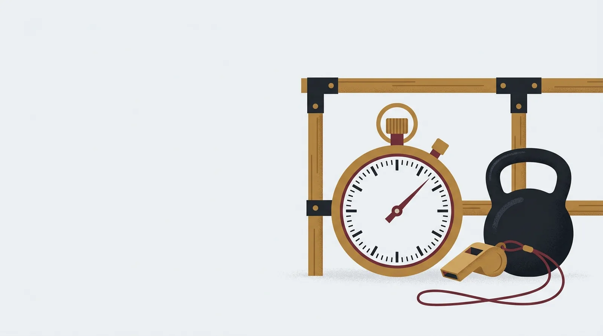

Pruebas físicas de Guardia Civil y Policía Nacional por el cupo: marcas de la última convocatoria

Las pruebas físicas son el filtro donde más gente se cae aunque el estudio vaya bien. Como militar de Tropa y Marinería partes con ventaja, pero las marcas de la Guardia Civil y de la Policía Nacional no son las de tu unidad, y conviene conocerlas con meses de antelación.
Un aviso antes de empezar. Lo que lees aquí sale de las bases de las convocatorias de 2026 publicadas en el BOE. Cada año se publican unas nuevas y las marcas pueden cambiar, así que úsalas como referencia para entrenar y confirma siempre las de la convocatoria abierta.
Guardia Civil: cuatro pruebas de apto o no apto
En la convocatoria de la Escala de Cabos y Guardias de 2026 (Resolución 160/38243/2026, BOE del 8 de mayo) las pruebas son resistencia, circuito de coordinación, potencia del tren superior y soltura acuática. No hay nota. El resultado es apto o no apto, y quien no supera todos los ejercicios queda fuera.
Estas son las marcas para menores de 35 años, tiempo máximo en las carreras y en el agua, y repeticiones mínimas en la de brazos:
- Resistencia, 2.000 metros: 9 min 25 s los hombres y 11 min 14 s las mujeres.
- Coordinación, circuito: 14,00 s los hombres y 16,00 s las mujeres.
- Potencia del tren superior: 16 repeticiones los hombres y 11 las mujeres.
- Soltura acuática, 50 metros: 70 s los hombres y 81 s las mujeres.
Para quienes tienen entre 35 y 39 años, y para los de 40 en adelante, las marcas se relajan. La tabla completa está en el Apéndice II de las bases.
Fíjate en los intentos. La resistencia y la natación se hacen en un único intento. El circuito y la prueba de brazos tienen dos, con descanso entre ellos. Y antes de empezar tienes que entregar un certificado médico oficial emitido en los 20 días anteriores. Sin él, quedas excluido.
Policía Nacional: tres ejercicios con nota
La convocatoria de la Escala Básica de 2026 (Resolución de 7 de julio, BOE del 10 de julio) incluye un circuito de agilidad con vallas, un ejercicio de fuerza y una carrera de 1.000 metros. En el de fuerza los hombres hacen dominadas, y las mujeres tienen un ejercicio distinto. Cada ejercicio se puntúa de 0 a 10. Un 0 en cualquiera te elimina, y necesitas una media de 5 para aprobar.
En el circuito de agilidad hay un corte que no admite discusión: 11,7 segundos o más para los hombres y 12,8 o más para las mujeres supone la eliminación. Tienes un intento, y un segundo solo si el primero se declara nulo.
Las marcas para puntuar en dominadas, en el ejercicio de las mujeres y en los 1.000 metros están en el Anexo II de las bases. Míralas en el BOE con la convocatoria abierta delante, porque esa tabla es la que cuenta. También se exige un certificado médico que acredite que puedes hacer las pruebas, y conviene mirar en las bases cuándo hay que entregarlo.
Cuándo llegas a las físicas
En la Policía Nacional las pruebas van en orden y eliminatorias: primero conocimientos, después aptitud física y al final la tercera prueba, que reúne el reconocimiento médico, la entrevista y los test psicotécnicos. Solo se evalúa cada prueba a quien superó la anterior. En la Guardia Civil la fase psicofísica viene después de la oposición, y a ella se convoca a 1,5 aspirantes por plaza ofertada. Es decir, entrenas ahora para una prueba que quizá hagas dentro de unos meses.
Cómo entrenar sabiendo las marcas
- Empieza por la prueba que peor se te da. En la Guardia Civil un solo fallo te deja fuera aunque el resto salga perfecto.
- Entrena con margen. Si la marca exigida son 14,00 s en el circuito, apunta a bajar de 13 y medio, porque el día del examen hay nervios y suelo desconocido.
- Practica el circuito y la natación con cronómetro y con la técnica propia de cada prueba, además de la forma física general.
- La natación es la que más fácil se descuida. Si llevas tiempo sin meterte en una piscina, empieza antes de lo que crees necesario.
- Haz un reconocimiento médico deportivo con antelación para llegar con el certificado sin prisas.
Cuando salga la próxima convocatoria, compara las tablas con las de 2026. Si coinciden, ya llevarás ventaja. Si cambian, el trabajo de base te servirá igual.
Empieza en Cupo Militar →